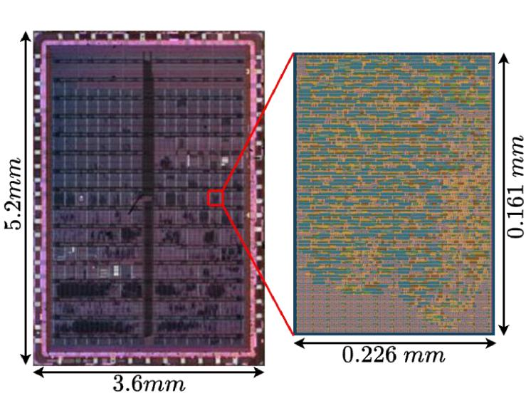

Línea 1 · IA para diseñar chips
IA → CHIPSAprendizaje por refuerzo que explora automáticamente el espacio de diseño de la aritmética digital y descubre multiplicadores aproximados fuera de las plantillas clásicas.
Ver proyectos de la Línea 1 →IA para diseñar chips · Chips para ejecutar IA
Somos el semillero del Departamento de Ingeniería Eléctrica y Electrónica de la Universidad Nacional de Colombia, Sede Bogotá. Usamos aprendizaje por refuerzo para descubrir aritmética digital y llevamos funciones de visión por computador al silicio con herramientas de código abierto, del RTL al chip medido.

Dos ejes que se alimentan entre sí: la aritmética que descubre la Línea 1 es el próximo bloque de los aceleradores de la Línea 2.
IA → CHIPSAprendizaje por refuerzo que explora automáticamente el espacio de diseño de la aritmética digital y descubre multiplicadores aproximados fuera de las plantillas clásicas.
Ver proyectos de la Línea 1 →CHIPS → IADiseño, implementación, fabricación y medición de ASIC de código abierto que ejecutan en silicio el front-end de visión por computador: escala de grises y detección de bordes Sobel.
Ver proyectos de la Línea 2 →Grilla de productos parciales como entorno de aprendizaje, vectorizado en CUDA con 512 instancias en paralelo. Agentes Monte Carlo, Q-learning, SARSA y SARSA de n pasos con recompensa por columna y por error final.
El multiplicador aproximado de 4 bits hallado por el agente, traducido a Verilog, sintetizado con LibreLane y evaluado en filtros de imagen frente a UDM, BAM y DRUM.
Arquitectura streaming de dos etapas para imágenes RGB de 320 × 240 recibidas por SPI, con LFSR de estímulo y lógica de selección de modo integradas para prueba.
Presentamos las dos líneas del semillero y abrimos cupos para tesis de maestría y doctorado.
Postúlate →Diseño, implementación y verificación post-silicio del ASIC de escala de grises y Sobel.
Ver artículo →Exploración del espacio de diseño de multiplicadores digitales potenciada con aprendizaje por refuerzo.
Ver artículo →En ChipLabUN puedes desarrollar tu tesis de maestría o doctorado en exploración de espacios de diseño con aprendizaje por refuerzo, aritmética aproximada, flujos de EDA abiertos y diseño físico de ASIC en Sky130.
jseslavag@unal.edu.corruedam@unal.edu.co